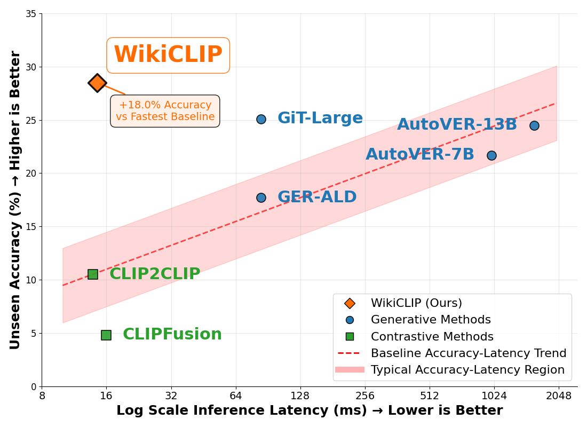
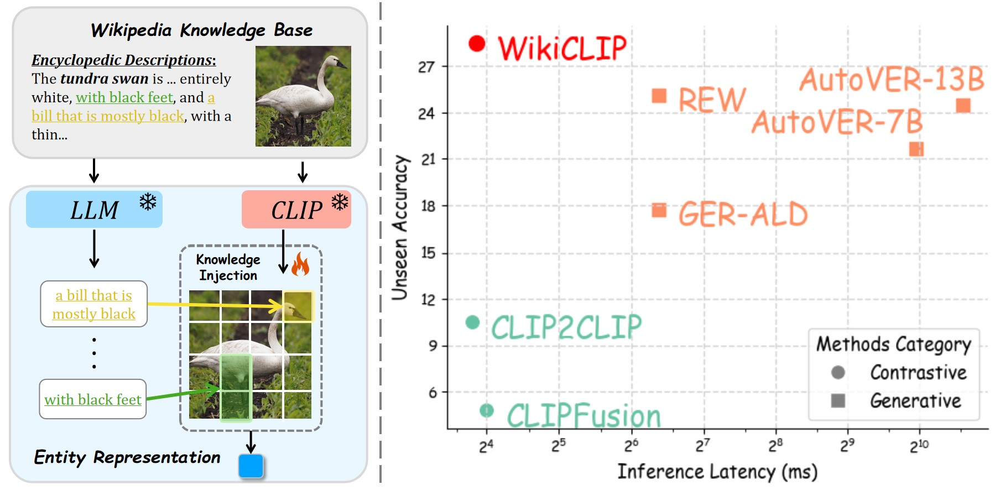
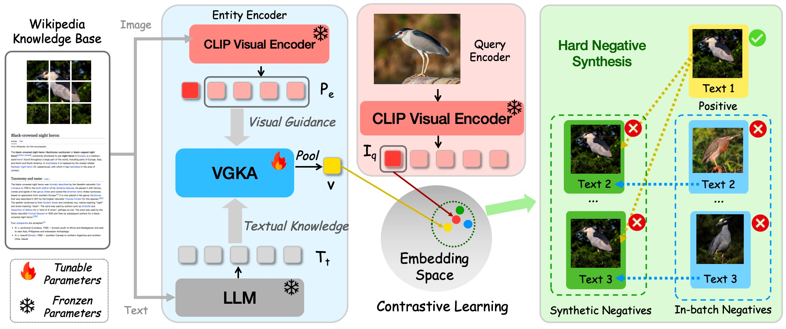
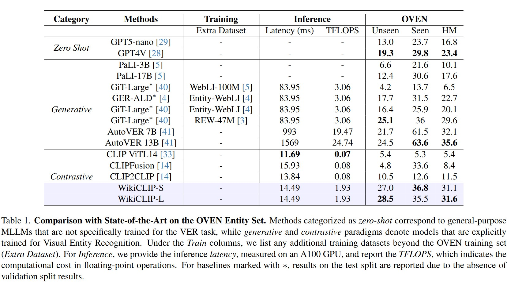
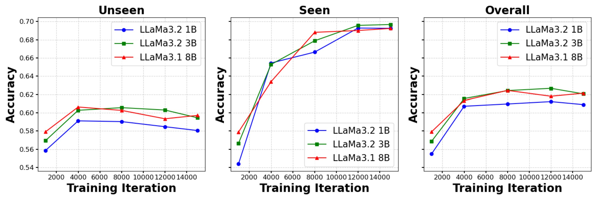
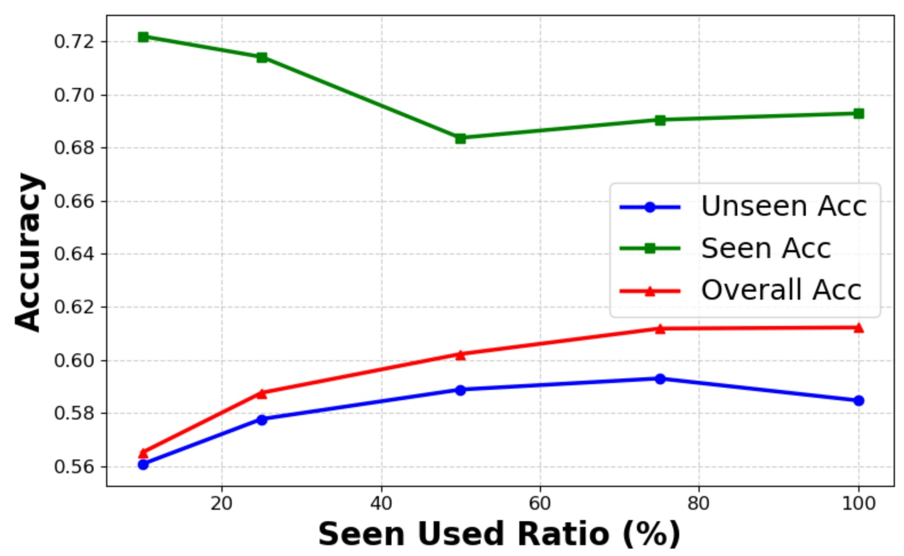
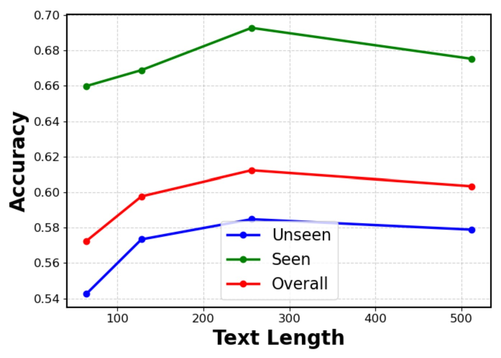
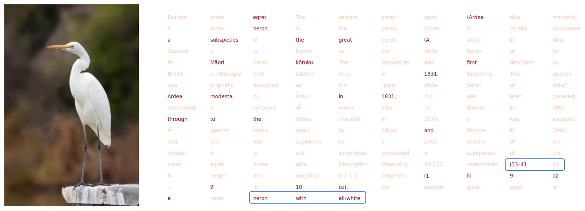
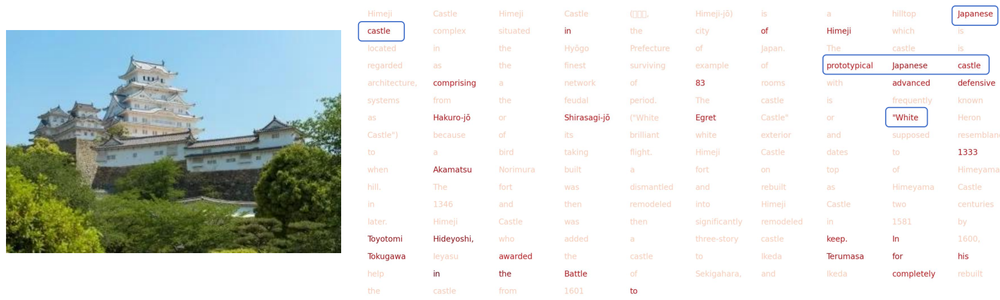

Abstract
Open-domain visual entity recognition (VER) seeks to associate images with entities in encyclopedic knowledge bases such as Wikipedia. Recent generative methods demonstrate strong performance but incur high computational costs. We propose WikiCLIP, a simple yet effective contrastive framework that establishes a strong and efficient baseline for open-domain VER. WikiCLIP leverages large language model embeddings as knowledge-rich entity representations and enhances them with a Vision-Guided Knowledge Adaptor (VGKA) that aligns textual semantics with visual cues at the patch level. To further encourage fine-grained discrimination, a Hard Negative Synthesis Mechanism generates visually similar but semantically distinct negatives during training. WikiCLIP significantly outperforms strong baselines on open-domain VER benchmarks and improves unseen accuracy on OVEN while reducing inference latency by nearly 100× compared with the leading generative model.
Motivation

WikiCLIP delivers strong unseen accuracy with significantly lower latency than generative baselines.

Contrastive retrieval offers a practical alternative for open-domain VER.
Generative VER pipelines are accurate but costly. WikiCLIP revisits contrastive retrieval with knowledge-rich entity embeddings and vision-guided filtering to achieve a strong efficiency–accuracy tradeoff.
Method

WikiCLIP pipeline. Vision-Guided Knowledge Adaptor aligns LLM text embeddings with CLIP patch features to produce entity representations, optimized via contrastive learning with hard negative synthesis.
WikiCLIP uses a dual-encoder architecture with a frozen CLIP image encoder and an entity encoder that fuses LLM text with visual guidance. Hard negatives are synthesized by swapping text among visually similar entities to train fine-grained discrimination.
Experiments

Main results on OVEN benchmark. WikiCLIP achieves strong performance with significantly lower latency.

Scaling LLMs improves unseen accuracy, with diminishing returns beyond 3B.

WikiCLIP maintains strong unseen performance even with fewer seen entities.

Best performance is achieved around 256 tokens of Wikipedia text.
On OVEN, WikiCLIP-L reaches 28.5% unseen accuracy and is nearly 100× faster than AutoVER at inference. It also generalizes well to E-VQA and INFOSEEK without dataset-specific fine-tuning.
Visualization

Vision-guided attention highlights entity-relevant text segments.

Visual cues guide selective knowledge extraction.
